- 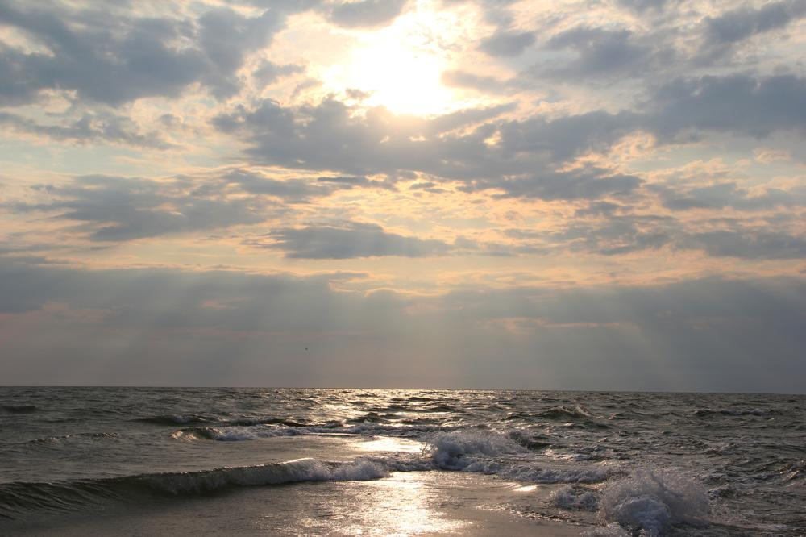 Фото №1" title="Должанка: 2019 -> Фото №1 (Кликни, чтобы глянуть фулл)">
")
- 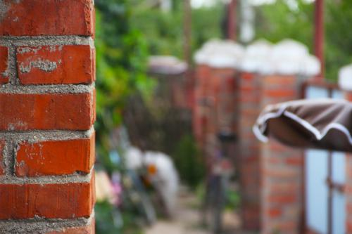 Фото №3" title="Должанка: 2019 -> Фото №3 (Кликни, чтобы глянуть фулл)">
- 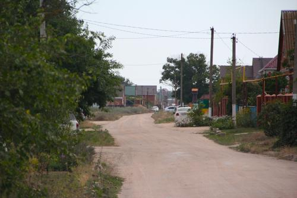 Фото №4" title="Должанка: 2019 -> Фото №4 (Кликни, чтобы глянуть фулл)">
- 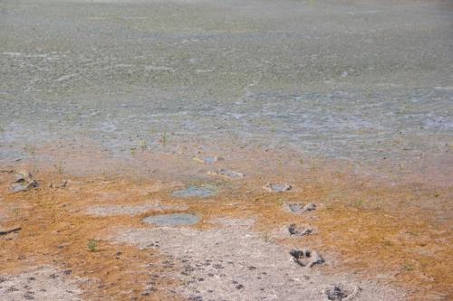 Фото №5" title="Должанка: 2019 -> Фото №5 (Кликни, чтобы глянуть фулл)">
- 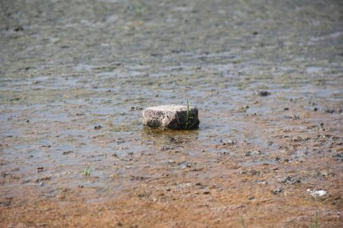 Фото №6" title="Должанка: 2019 -> Фото №6 (Кликни, чтобы глянуть фулл)">
- 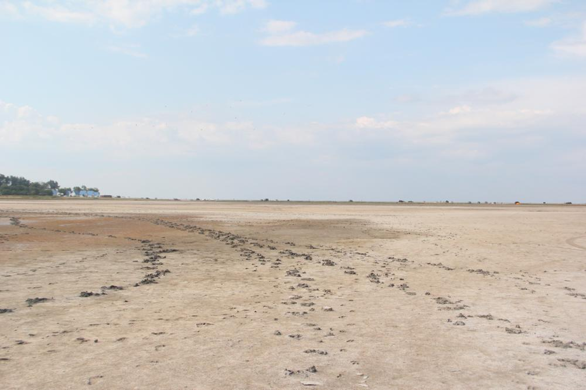 Фото №7" title="Должанка: 2019 -> Фото №7 (Кликни, чтобы глянуть фулл)">
- 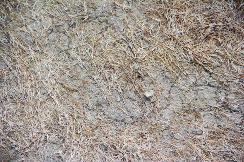 Фото №8" title="Должанка: 2019 -> Фото №8 (Кликни, чтобы глянуть фулл)">
- 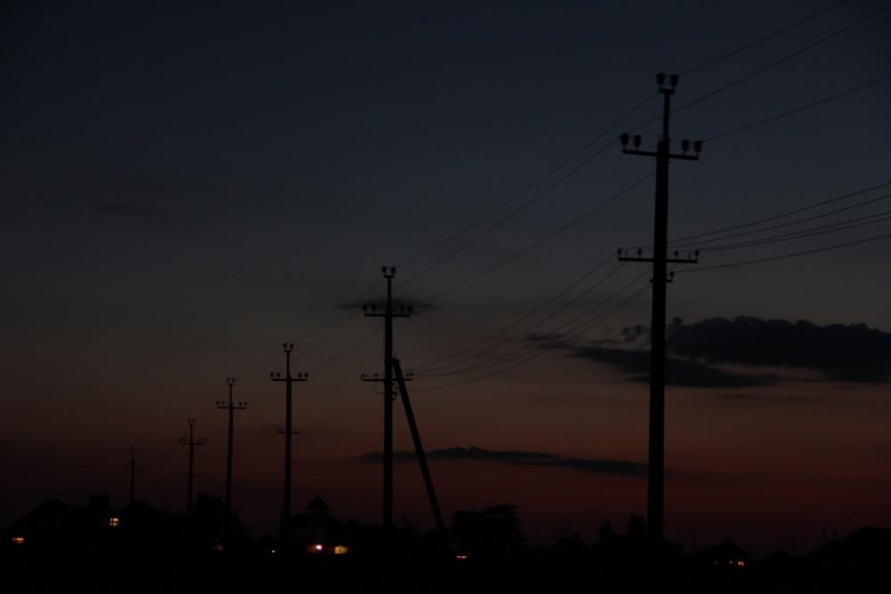 Фото №9" title="Должанка: 2019 -> Фото №9 (Кликни, чтобы глянуть фулл)">
- 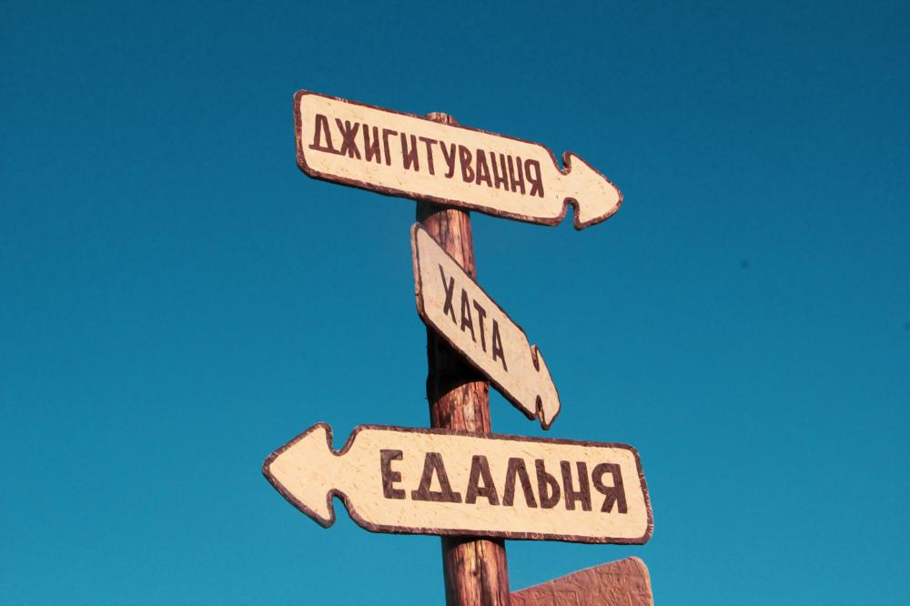 Фото №10" title="Должанка: 2019 -> Фото №10 (Кликни, чтобы глянуть фулл)">
- 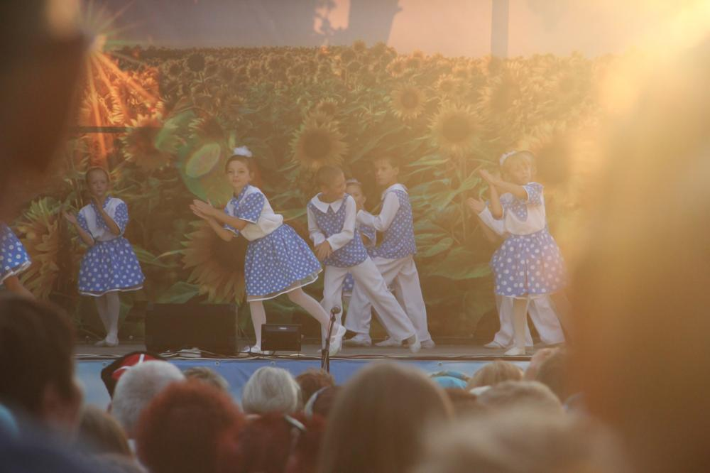 Фото №11" title="Должанка: 2019 -> Фото №11 (Кликни, чтобы глянуть фулл)">
")
- 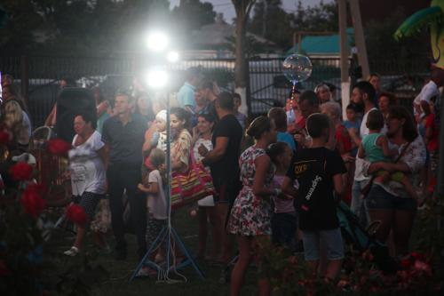 Фото №13" title="Должанка: 2019 -> Фото №13 (Кликни, чтобы глянуть фулл)">
- 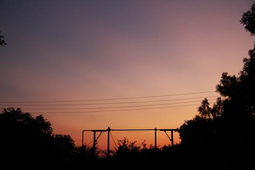 Фото №14" title="Должанка: 2019 -> Фото №14 (Кликни, чтобы глянуть фулл)">
")
- 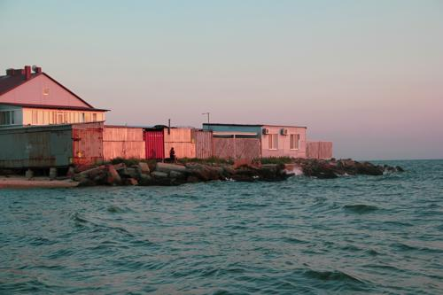 Фото №16" title="Должанка: 2019 -> Фото №16 (Кликни, чтобы глянуть фулл)">
- 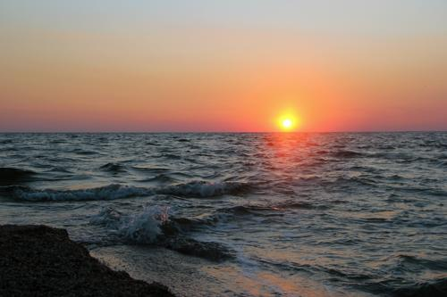 Фото №17" title="Должанка: 2019 -> Фото №17 (Кликни, чтобы глянуть фулл)">
- 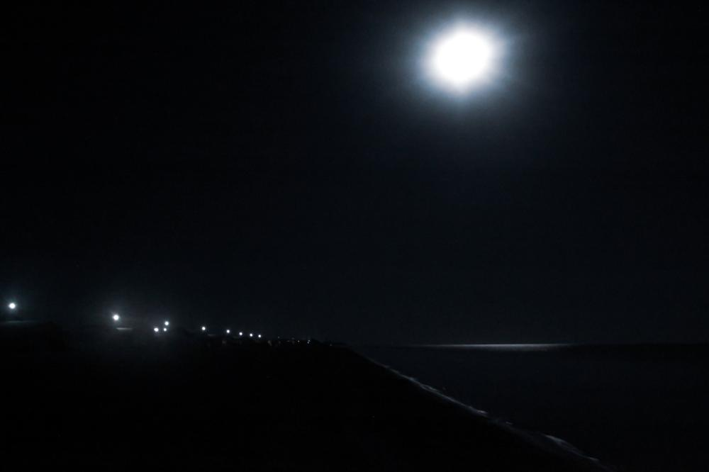 Фото №18" title="Должанка: 2019 -> Фото №18 (Кликни, чтобы глянуть фулл)">
- 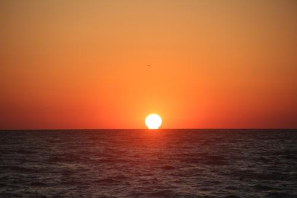 Фото №19" title="Должанка: 2019 -> Фото №19 (Кликни, чтобы глянуть фулл)">